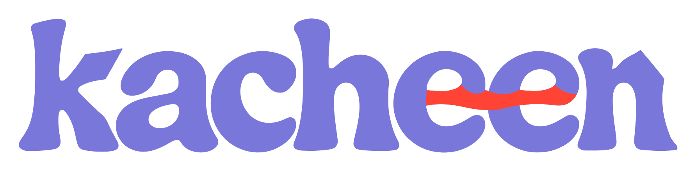
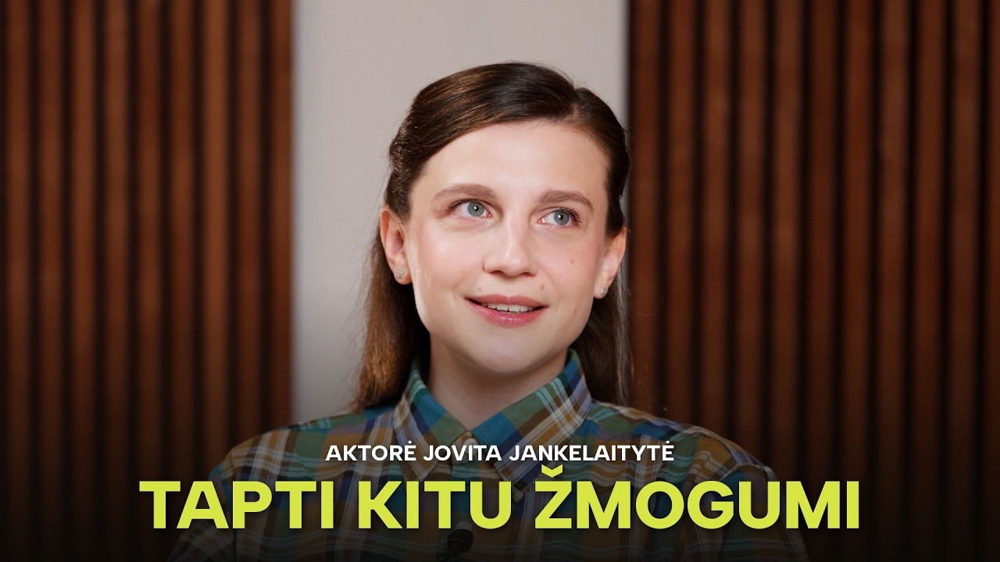
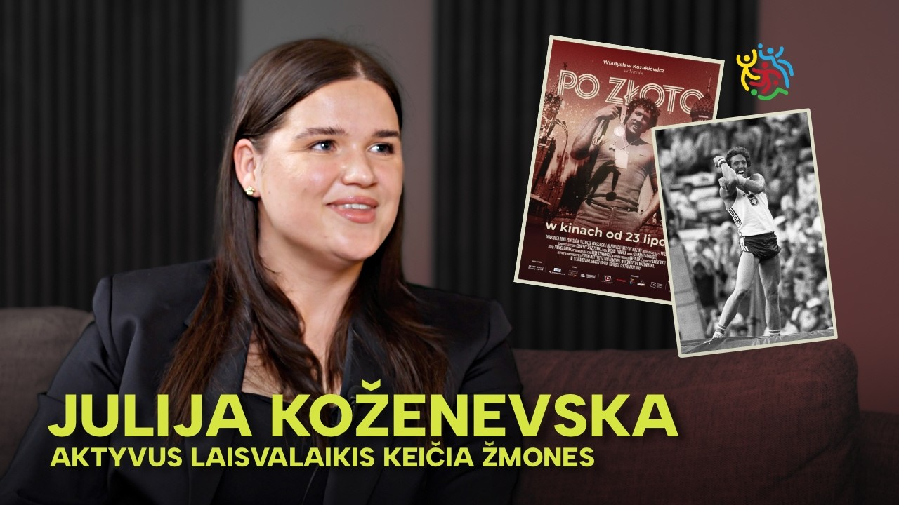
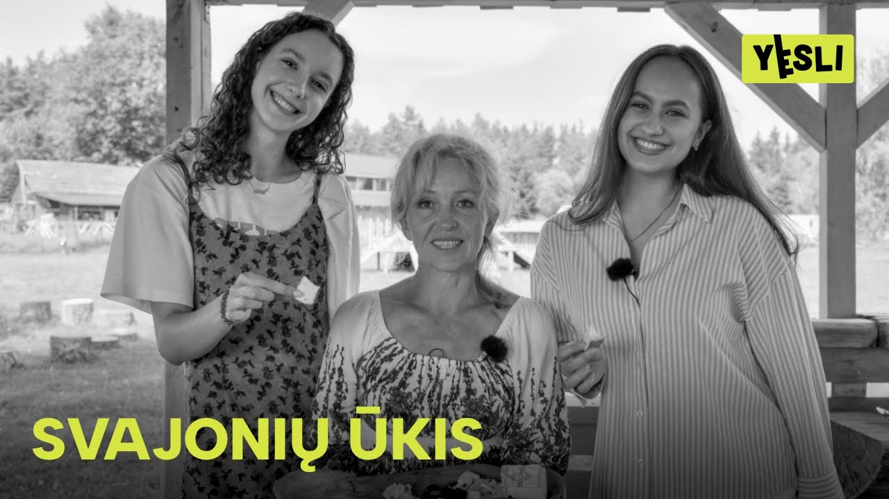

Jovita Jankelaitytė
Kai tavo darbas yra tapti kitu žmogumi.

Aptarkime idėjąNEPRIKLAUSOMA KŪRYBA / LIETUVA
Kuriu vaizdą ir garsą idėjoms, kuriomis norisi dalintis.

YESLI / INTERVIU01 / PORTFOLIO
Kai tavo darbas yra tapti kitu žmogumi.

INTERVIUAktyvus laisvalaikis keičia žmones.

ŽMONIŲ ISTORIJOSAnželikos istorija apie ryžtą ir gyvenimą gamtoje.
Jano Sniadeckio gimnazijos šimtadienio solo šokis.
MUZIKOS PROJEKTAS / SPOTIFY
Vaizdo projektai publikuoti YESLI ir Kacheen kanaluose. Muzikos kūrinys — Spotify.
02 / KĄ KURIU
03 / UŽ KACHEEN
Kacheen — mano kūrybos vardas. Filmuoju, fotografuoju ir dirbu su garsu.
Daugiau Instagram04 / KONTAKTAI
Papasakok apie projektą ir planuojamą datą.
info@kacheen.ltArba parašyk Instagram